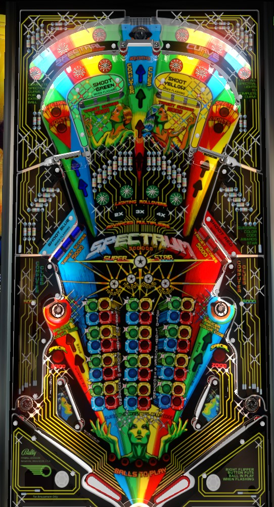

Try to crack the computer's code of 4 colours by completing drop targets. You can receive hints as to what colours do or do not belong in each position by shooting saucers- which colour you get a clue about is timing-based for the top saucer, and based on spins of the opposite side's spinner for the two lower saucers. Whenever the ball goes into a saucer or underneath the playfield plastic near a spinner, hold up the flipper on the side of the table that the ball disappeared to, because a staged ball in the lower corner of the game will spit out toward the flippers very quickly.
Spectrum does not have a plunger or traditional shooter lane. When the ball is ready to be put on the playfield, a light on the right side of the apron will flash; press the right flipper button and the ball will be kicked out of the center drain, between the flippers, onto the playfield. Be careful! If the game is ready for a turn to start but the right flipper is not pressed for about 15 seconds, the game will say "you're taking too long" and plunge the ball anyway.
The goal of Spectrum is to guess a four-colour code randomly generated by the computer. Each element in the code can be red, yellow, green, or blue. In the center of the playfield are 48 different red, yellow, green, and blue inserts. Consider this as a 3-column, 4-row grid of clusters, where each cluster includes one each of green, yellow, blue, and red lights. Each row of clusters represents guesses made at different elements in the code: top row for the 1st colour in the code, 2nd row for the 2nd colour, etc. Colours can repeat within the same code.
There are 4 banks of 3 drop targets around the playfield; starting in the lower left and going clockwise around the table, they are blue, green, yellow, and red. Each drop target down in any bank scores 5,000 points. On easy settings, guessing a colour requires hitting any 2 of the 3 targets in a bank; on hard settings, all 3 targets in the bank must be knocked down. When making a guess on a colour, if that guess was correct, the corresponding colour will flash in the central grid; if the guess was incorrect, the colour will be lit solidly. After making the first guess at colour 1, you move on to first guess at colour 2, and so on; after making a first guess at colour 4, you move on to second guess at colour 1. However, any colours that have been correctly guessed are skipped; the game moves on and spots your correct guess, since you've already figured out which colour belongs to that part of the sequence.
Shooting any lit saucer gives a clue as to what the correct colour is for the current entry of the sequence.
For the top saucer, which colour you receive a clue about is timing based, and scans between the four colours. If you receive a clue about a wrong colour, you are told that that colour is wrong, and that colour is removed from the scanning sequence of the top saucer's arrows, but only until a guess is made. If you receive a clue about a correct colour, you are effectively told that it is correct, and a light underneath the plastic near the correct colour drop targets will flash.
For the lower saucers, which colour you receive a hint for will change whenever the opposite side spinner is made. The right spinner alternates whether the lower left saucer gives a clue on red or yellow; the left spinner alternates whether the lower right saucer gives a clue about blue or green. Spinners always score 1,000 points per spin. After a clue is received from one of the lower saucers, you must register at least one spin on the spinner that corresponds to that saucer before you can receive another clue from that saucer.
If you receive a clue and are told that the clue's colour is the correct one, you can also have the correct guess spotted for you by making the top saucer one more time. Landing in any saucer always scores 10,000 points. The top saucer alternates whether it kicks the ball to the left or right; the lower saucers kick the ball to their own side of the table, causing a locked ball in the lower corners of the game to be kicked out in its place. Be ready for this and always have a flipper raised when the ball enters a saucer based on which direction the ball disappears to.
If any elements in the code are not correctly guessed in 3 tries, then when the third guess for all 4 elements is accounted for, all guesses will move left one position, with the oldest guess disappearing, to make room for one more round of guesses. Correctly guessing all 4 colours in the sequence scores a Star, which is worth 100,000 points at the end of the game, and restarts the guessing process with a new code. Collecting 2 stars lights one of the in lanes for Special, alternating each time either spinner registers a spin. Collecting 3 stars (on easy settings) or 4 stars (on hard settings) lights both in lanes for their own Specials. Guesses made and stars collected are preserved from ball to ball, but progress on each individual drop target bank is not.
Press a star rollover to light it. Lighting all 4 star rollovers increments the bonus multiplier by 1x, up to a maximum of 4x. On easy settings, the star rollovers can be made in any order. On hard settings, they must be made in order from left to right.
Making two full orbit shots through each spinner awards 1 extra ball. A full left orbit shot, for example, is defined as a shot that hits the left flipper from below, activates one or more star rollovers behind the spinners, and goes through one of the many gaps on the right side of the game such that the lower right staged ball is kicked out toward the flippers. The same is true in the opposite direction for a full right orbit shot. The two inserts reading Spectral and Lights in each orbit shot the progress toward the extra ball on that side's orbit shot.
Spectrum has no out lanes at all, just in lanes. To compensate, the gap between the two flippers is noticeably larger than normal. In lanes score 2,000 points, or Special when lit after collecting two or more Stars as described above. In the far lower corners of the game are two saucers that usually come preloaded with locked pinballs. When the ball in play enters a saucer, it will be sent to one side of the table or the other; also, the ball can "disappear" under playfield plastics through large gaps in the walls near the spinners. When this happens, the ball in play comes down one side of the table, and a ball that is "locked" in one of the corner saucers will be kicked out to become the new ball in play, and the "disappeared" ball will take the place of the locked ball. This ball transfer happens very quickly, so be on your guard.
End of ball bonus is counted as 5,000 points for each incorrect guess and 10,000 points for each correct guess currently visible on the grid of code guesses in the center of the playfield. This base bonus is multiplied by the bonus multiplier, which can be as high as 4x by completing sets of the center star rollovers as described above. Base bonus does carry over from ball to ball, but it is effectively reset back to 0 any time a code is completely guessed correctly. Game settings determine whether bonus multiplier carries over from ball to ball or not.
At the end of the game, an additional bonus of 100,000 points per Star is awarded. This can be as high as 900,000 points if 9 codes were completed over the course of the game. Bonus multiplier on the final ball of the game does not affect the end of game star bonus; however, I believe that the star bonus is forfeited if a tilt occurs on a player's final ball.
In competition/novelty play, extra balls score 25,000 points and specials score 50,000 points.
Lit Spectral Lights inserts in the orbits, bonus multipliers, lit specials, eliminated code colours, and confirmed code colours can all be independently set to carry over from ball to ball or not.
The first in lane special always lights at 2 completed codes. The second in lane special can be set to light at either 3 or 4 completed codes.
Center green star rollovers can be set to require order from left to right, or be allowed in any order for the purposes of completing a set to advance the bonus multiplier. A separate setting determines whether the multiplier carries from ball to ball.

All copyrighted names and terms in this document belong to their respective owners. The information provided in this document is for educational purposes only and no infringement is intended.
Back to top To game list To main page